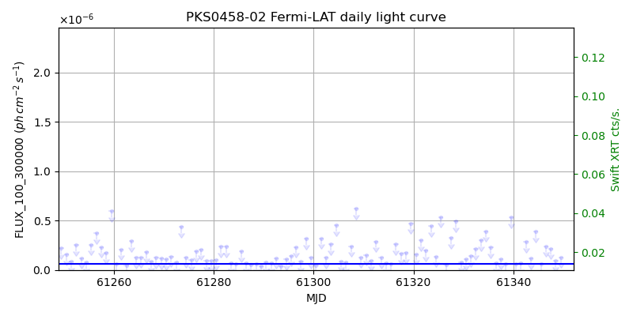
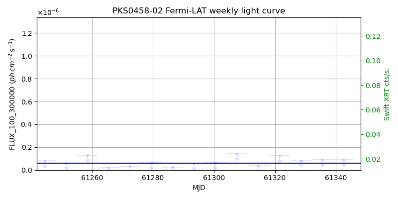
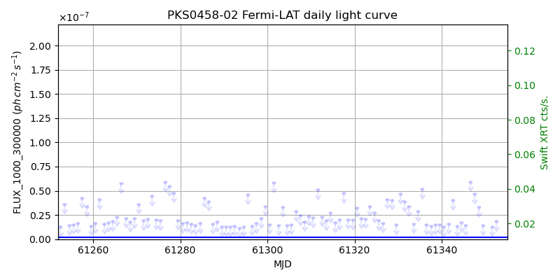
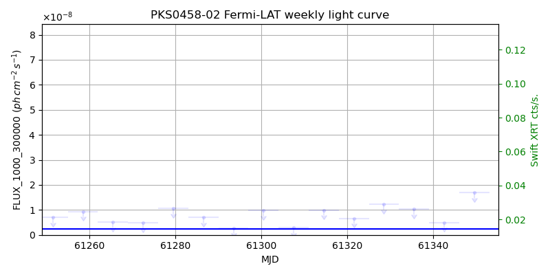

LAT Lightcurve site: https://fermi.gsfc.nasa.gov/ssc/data/access/lat/msl_lc/source/NRAO_190
Swift site: https://www.swift.psu.edu/monitoring/source.php?source=PKS0458-02
NED: Query
Time of last update of this page: UT: 2026-11-06 16:15 (MJD: 61350.677)
| Property | Value |
|---|---|
| R.A. | 4:42:38.64 |
| Dec. | -0:17:42.0 |
| z | 0.844 |
| 3FGL SpectrumType | PowerLaw |
| 3FGL PL Index | 2.41 |
| 3FGL Flux_100_300000 | 6.03e-08 1 / (s cm2) |
| 3FGL Flux_1000_300000 | 2.33e-09 1 / (s cm2) |
| 3FGL Flux >200 GeV | 1.30e-12 1 / (s cm2) |
| 3FGL Extrap. Crab >200 GeV | 0.01 |
| 3FGL Flux After EBL Absorption >200GeV | 4.11e-14 1 / (s cm2) |
| 3FGL EBL Crab Fraction >200GeV | 0.00 |

| MJD | dMJD | Flux | dFlux | Frac3FGL | FracCrab>200GeV | EBLFracCrab>200GeV |
|---|---|---|---|---|---|---|
| 61345.50 | 0.50 | 6.10e-08 | 0.00e+00 | 0.00 | 0.00 | 0.00 |
| 61346.50 | 0.50 | 2.39e-07 | 0.00e+00 | 0.00 | 0.00 | 0.00 |
| 61347.50 | 0.50 | 2.15e-07 | 0.00e+00 | 0.00 | 0.00 | 0.00 |
| 61348.50 | 0.50 | 9.10e-08 | 0.00e+00 | 0.00 | 0.00 | 0.00 |
| 61349.50 | 0.50 | 1.29e-07 | 0.00e+00 | 0.00 | 0.00 | 0.00 |

| MJD | dMJD | Flux | dFlux | Frac3FGL | FracCrab>200GeV | EBLFracCrab>200GeV |
|---|---|---|---|---|---|---|
| 61314.50 | 3.50 | 3.75e-08 | 0.00e+00 | 0.00 | 0.00 | 0.00 |
| 61321.50 | 3.50 | 1.26e-07 | 0.00e+00 | 0.00 | 0.00 | 0.00 |
| 61328.50 | 3.50 | 8.37e-08 | 0.00e+00 | 0.00 | 0.00 | 0.00 |
| 61335.50 | 3.50 | 8.85e-08 | 0.00e+00 | 0.00 | 0.00 | 0.00 |
| 61342.50 | 3.50 | 8.93e-08 | 0.00e+00 | 0.00 | 0.00 | 0.00 |

| MJD | dMJD | Flux | dFlux | Frac3FGL | FracCrab>200GeV | EBLFracCrab>200GeV |
|---|---|---|---|---|---|---|
| 61345.50 | 0.50 | 1.42e-08 | 0.00e+00 | 0.00 | 0.00 | 0.00 |
| 61346.50 | 0.50 | 5.92e-08 | 0.00e+00 | 0.00 | 0.00 | 0.00 |
| 61347.50 | 0.50 | 4.67e-08 | 0.00e+00 | 0.00 | 0.00 | 0.00 |
| 61348.50 | 0.50 | 3.30e-08 | 0.00e+00 | 0.00 | 0.00 | 0.00 |
| 61349.50 | 0.50 | 1.42e-08 | 0.00e+00 | 0.00 | 0.00 | 0.00 |

| MJD | dMJD | Flux | dFlux | Frac3FGL | FracCrab>200GeV | EBLFracCrab>200GeV |
|---|---|---|---|---|---|---|
| 61314.50 | 3.50 | 9.93e-09 | 0.00e+00 | 0.00 | 0.00 | 0.00 |
| 61321.50 | 3.50 | 6.63e-09 | 0.00e+00 | 0.00 | 0.00 | 0.00 |
| 61328.50 | 3.50 | 1.23e-08 | 0.00e+00 | 0.00 | 0.00 | 0.00 |
| 61335.50 | 3.50 | 1.03e-08 | 0.00e+00 | 0.00 | 0.00 | 0.00 |
| 61342.50 | 3.50 | 4.93e-09 | 0.00e+00 | 0.00 | 0.00 | 0.00 |
--------------------------------------------------------- Using user-supplied coords: 4:42:38.64 -0:17:42.0 2000 --------------------------------------------------------- FLWO UT night of: 2026-11-07 Local Sid. @ Midnight: 02:42 Sunset (-15.0) (local, UT): 18:39 01:39 Sunrise (-15.0) (local, UT): 05:36 12:36 Moonrise (local, UT): 05:16 12:16 Moonset (local, UT): Moon phase: 0.04 --------------------------------------------------------- AzTime LSID UT Obj_el Obj_az Mn_el Mn_az Sep. --------------------------------------------------------- 18:39 21:20 01:39 -17.8 78.9 -35.5 278.9 123.4 19:09 21:50 02:09 -11.5 83.1 -41.6 283.5 123.7 19:39 22:20 02:39 -4.6 87.1 -47.5 288.8 123.9 20:09 22:50 03:09 1.6 91.1 -53.3 295.3 124.2 20:39 23:20 03:39 7.8 95.0 -58.7 303.4 124.6 21:09 23:50 04:09 14.1 99.1 -63.5 313.9 124.9 21:39 00:20 04:39 20.3 103.5 -67.5 328.0 125.2 22:09 00:50 05:09 26.5 108.2 -70.0 346.2 125.5 22:39 01:20 05:39 32.4 113.4 -70.5 6.9 125.8 23:09 01:51 06:09 38.2 119.4 -68.8 26.6 126.1 23:39 02:21 06:39 43.5 126.4 -65.4 42.5 126.4 00:09 02:51 07:09 48.4 134.6 -60.9 54.4 126.8 00:39 03:21 07:39 52.6 144.5 -55.8 63.5 127.1 01:09 03:51 08:09 55.7 156.1 -50.2 70.6 127.3 01:39 04:21 08:39 57.6 169.4 -44.4 76.4 127.6 02:09 04:51 09:09 58.0 183.5 -38.4 81.4 127.9 02:39 05:21 09:39 56.9 197.4 -32.4 85.8 128.2 03:09 05:51 10:09 54.3 209.9 -26.3 89.9 128.4 03:39 06:21 10:39 50.6 220.6 -20.2 93.7 128.7 04:09 06:51 11:09 46.1 229.7 -14.2 97.5 128.9 04:39 07:21 11:39 40.9 237.2 -8.1 101.2 129.1 05:09 07:52 12:09 35.4 243.7 -1.2 105.0 129.3 05:36 08:19 12:36 30.0 248.8 3.4 108.6 129.5 --------------------------------------------------------- Dark hours >55 deg.: 2.02 srcstart (UT): 2026-11-07 08:00 srcend (UT): 2026-11-07 10:02